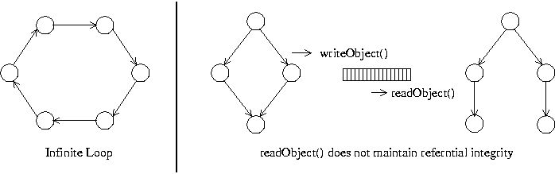

Interface DataSerializable
-
- All Superinterfaces:
java.io.Serializable
- All Known Subinterfaces:
CollectionType,MapType,ObjectType,PersistentID,StructType
- All Known Implementing Classes:
AbstractGatewayDeltaEvent,BootstrappingFunction,CreateRegionFunction,DeltaSession,DeltaSession10,DeltaSession8,DeltaSession9,ExpirationAttributes,GatewayDeltaCreateEvent,GatewayDeltaDestroyEvent,MembershipAttributes,RegionConfiguration,RegionSizeFunction,RegionSubRegionSnapshot,ServerLoad,SubscriptionAttributes,TouchPartitionedRegionEntriesFunction,TouchReplicatedRegionEntriesFunction
public interface DataSerializable extends java.io.SerializableAn interface for objects whose state can be written/read as primitive types and strings ("data"). That is, instead of serializing itself to anObjectOutputStream, aDataSerializablecan serialize itself to aDataOutput. By implementing this interface, objects can be serialized faster and in a more compact format than standard Java serialization. TheDataSerializerclass contains a number of static methods that may be helpful to implementations ofDataSerializable.When possible, GemFire respects the
DataSerializablecontract to provide optimal object serialization. For instance, if aDataSerializableobject is placed into a distributed cache region, itstoDatamethod will be used to serialize it when it is sent to another member of the distributed system.To avoid the overhead of Java reflection,
DataSerializableclasses may register anInstantiatorto be used during deserialization. Alternatively, classes that implementDataSerializablecan provide a zero-argument constructor that will be invoked when they are read withDataSerializer.readObject(java.io.DataInput).Some classes (especially third-party classes that you may not have the source code to) cannot be modified to implement
DataSerializable. These classes can be data serialized by an instance ofDataSerializer.DataSerializableoffers improved performance over standard Java serialization, but does not offer all of the features of standard Java serialization. In particular, data serialization does not attempt to maintain referential integrity among the objects it is writing or reading. As a result, data serialization should not be used with complex object graphs. Attempting to data serialize graphs that contain object cycles will result in infinite recursion and aStackOverflowError. Attempting to deserialize an object graph that contains multiple reference paths to the same object will result in multiple copies of the objects that are referred to through multiple paths. - Since:
- GemFire 3.5
- See Also:
Serializable,DataSerializer,Instantiator
-
-
Nested Class Summary
Nested Classes Modifier and Type Interface Description static interfaceDataSerializable.ReplaceableReplaceableallows an object to write an alternative version of itself to aDataOutput.
-
Method Summary
All Methods Instance Methods Abstract Methods Modifier and Type Method Description voidfromData(java.io.DataInput in)Reads the state of this object as primitive data from the givenDataInput.voidtoData(java.io.DataOutput out)Writes the state of this object as primitive data to the givenDataOutput.
-
-
-
Method Detail
-
toData
void toData(java.io.DataOutput out) throws java.io.IOExceptionWrites the state of this object as primitive data to the givenDataOutput.Since 5.7 it is possible for any method call to the specified
DataOutputto throwGemFireRethrowable. It should not be caught by user code. If it is it must be rethrown.- Parameters:
out- theDataOutputto write to- Throws:
java.io.IOException- A problem occurs while writing toout
-
fromData
void fromData(java.io.DataInput in) throws java.io.IOException, java.lang.ClassNotFoundExceptionReads the state of this object as primitive data from the givenDataInput.- Parameters:
in- theDataInputto read from- Throws:
java.io.IOException- A problem occurs while reading frominjava.lang.ClassNotFoundException- A class could not be loaded while reading fromin
-
-